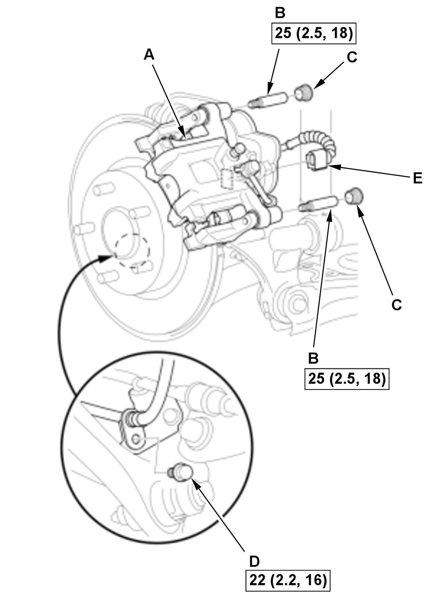

Rear Brake Pad Removal and Installation (2020 2021): Installation
NOTE:
- How to read the torque specifications .
- Review the Service Precautions before doing repairs or service .
- Brake Pad - Install
1. Install a commercially available brake caliper piston compressor tool (A) on the caliper body (B). 2. Press in the piston with the brake caliper piston compressor tool.
3. Remove the brake caliper piston compressor tool.
Except Type-R 4. Install the brake pads (A) with the wear indicator (B) on the bottom-inside position.
NOTE: If you are reusing the brake pads, always reinstall the brake pads in their original positions to prevent a temporary loss of braking efficiency.
Type-R 5. Install the brake pads (A) with the wear indicator (B) on the bottom-inside position.
NOTE:
- When installing new brake pads, peel the backing paper off the outer brake pad to expose the adhesive on the shim.
- When reusing the brake pads, remove the adhesive layer on the outer pad and apply 3M Adhesive Transfer Tape 9473PC or equivalent.
- Do not touch the adhesive when installing the brake pad.
- Keep dirt or other contaminants off the adhesive surface.
- If you are reusing the brake pads, always reinstall the brake pads in their original positions to prevent a temporary loss of braking efficiency.

 Courtesy of HONDA, U.S.A., INC.HONDA, U.S.A., INC.
Courtesy of HONDA, U.S.A., INC.HONDA, U.S.A., INC.6. Install the caliper body (A). 7. Install the pin bolts (B).
8. Install the caps (C).
9. Install the brake hose mounting bolt (D).
10. Connect the connector (E).
11. Install the housing clip (A). 12. Press the brake pedal several times to make sure the brakes work.
NOTE: Engagement may require a greater pedal stroke immediately after the brake pads have been replaced as a set. Several applications of the brake pedal will restore the normal pedal stroke.
- Brake Caliper Piston - Finish the MAINTENANCE MODE
NOTE: When not using the HDS, install the electric parking brake actuator . 1. Turn the vehicle to the ON mode.
2. Select ADJUSTMENT from ABS/TCS/VSA menu with the HDS, then enter BACK TO NORMAL MODE from BRAKE PAD MAINTENANCE MODE, and follow the screen prompts. Make sure THIS FUNCTION PROCEDURE IS FINISHED is displayed on the screen, then press the enter button.
3. Turn the vehicle to the OFF (LOCK) mode.
- Rear Wheels - Install
- Brake Fluid - Refill
1. Add brake fluid as needed. - After Installation - Brake Pad (Type-R)
1. Start the engine, and press the brake pedal for 10 seconds with 196 N (20 kgf, 44 lbf) of force to set the adhesive on the shim securely to the caliper.